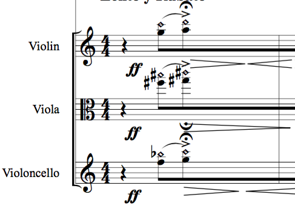
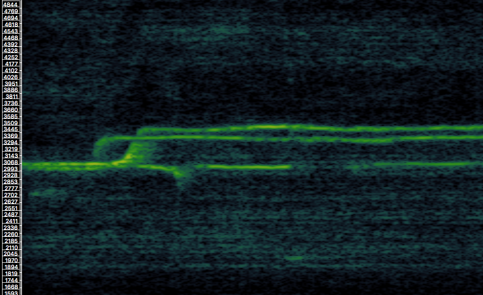

10 Interdisciplina entre ciencia y arte
10.1 Introducción
Este capítulo se propone abordar las problemáticas respecto al manejo del espacio sonoro desde una perspectiva artística y multidisciplinaria. A tal fin, se revisarán los aspectos creativos que tuvieron, como eje central, la utilización de la información proveniente del ámbito científico como disparador del proceso artístico-musical. Durante el período comprendido entre el año 2011 y 2016 he realizado una serie de obras, en distintos formatos de difusión, lo cual representó un espacio de emisión de hipótesis y banco de pruebas en relación directa con mi investigación en el campo científico.
Es imprescindible indicar que el análisis de las obras aquí expuestas no intenta abordar el concepto y las técnicas compositivas utilizadas desde una perspectiva didáctica y/o paradigmática respecto a los efectos psicofísicos y multimodales descritos en los capítulos anteriores. Por el contrario, el objetivo del análisis se centra en evidenciar la aplicación artística de la información proveniente del ámbito científico, la cual representó una referencia de gran impacto en el imaginario artístico de cada caso, además de servir como eje común y estructural para la realización de cada una de las obras. Cada obra ocupa un ámbito particular respecto al contexto y al período de producción artística, así como también su medio de difusión (obra escénica, instalación sonora, escultura y música instrumental).
De acuerdo a lo antedicho, el objetivo de este capítulo es realizar un estudio artístico descriptivo de cada obra en particular, revisando cuáles fueron los métodos de realización y los efectos que se pretenden en el espectador. De esta manera, se busca que, en futuros trabajos, este tipo de enfoque pueda ayudar a la creación de nuevas teorías normativas de análisis y prácticas compositivas del espacio sonoro. Para cada obra se realizará una descripción general del marco conceptual utilizado. Además se revisarán las estrategias compositivas y los puntos de contacto con la información proveniente del campo científico. Finalmente, se procederá a la descripción detallada de las tecnologías electrónico-digitales utilizadas en cada obra.
Las obras que se expondrán en éste capítulo se detallan a continuación:
Indicaciones para el contacto con Mundos Suprafísicos
(2012 - Pieza para ensamble Instrumental)
Los océanos tienen oídos
(2012 - Pieza para ensamble Instrumental)
LEJOS
(2014 - obra escénica performática)
Búcaro de Secretos
(2013 - Instalación Sonora)
Crisálida
(2015 - Escultura Sonora)
10.2 Piezas para ensamble instrumental (2012)
Indicaciones para el contacto con Mundos Suprafísicos
Los océanos tienen oídos
En el año 2011, mediante el apoyo de la editorial musical MELOS (Bs. As., Argentina), tuve la oportunidad de trabajar conjuntamente con el ensamble Compañía Oblicua, dirigida por el Mtro. Marcelo Delgado. De esta colaboración surgieron dos piezas instrumentales para ensamble de cámara llamadas “Indicaciones para el contacto con Mundos Suprafísicos” y “Los océanos tienen oídos” (para una revisión detallada de la partitura, ver Anexos). Estas piezas fueron estrenadas por la Compañía Oblicua el 4 de Julio del 2012, en el salón Auditorio de la Biblioteca Nacional (Buenos Aires, Argentina). La distribución instrumental estuvo ajustada a la disposición sugerida por el ensamble, como se puede ver en la Figura 10.1.
{kind=link}
Figura 10.1. Ensamble Compañía Oblicua (dir. Marcelo Delgado). Disposición instrumental para el estreno de las piezas para grupo de cámara Indicaciones para el contacto con Mundos Suprafísicos Y Los océanos tienen oídos (4 de Julio del 2012, en el salón Auditorio de la Biblioteca Nacional, Buenos Aires, Argentina)
El orgánico de estas piezas para ensamble instrumental estuvo formado por:
Clarinete en Bb / Clarinete Bajo en Bb
Saxo Soprano en Bb / Saxo Tenor en Bb
Fagot / Contrafagot
Percusión
3 Woodblocks
3 Temple blocks
3 Cencerros
Platillos (Crash, Chino)
Tam Tam
Bongó
3 Toms
Gran Caja
Vibráfono
Violín
Viola
Cello
10.3 Marco teórico y realización
Paralelamente a la composición de estas piezas para ensamble instrumental, en el año 2012 realicé una serie de experimentos psicofísicos en el Laboratorio de Percepción Sonora (LAPSo) referente al rol del ancho de banda espectral en la percepción auditiva de distancia. El objetivo de este estudio hizo foco en examinar los efectos de la frecuencia del estímulo sonoro y el ancho de banda espectral para los sonidos producidos por las fuentes sonoras. Mediante este trabajo se estudió el efecto del contenido espectral de un estímulo sobre la percepción auditiva de distancia, en un entorno semi reverberante. Los resultados del experimento mostraron claramente que el contenido espectral de una señal sonora afecta de manera sensible a la PAD (Spiousas et al., 2017). En primer término, se aprecia que la PAD es más precisa cuando en respuesta ante a un sonido con contenido espectral complejo (es decir, Ruido Blanco o Rosa) que respuesta a estímulos de tonos puros. Además, se concluyó que la influencia del ancho de banda depende directamente de la zona del espectro donde el estímulo presenta mayor información. Es decir, que para estímulos centrados en frecuencias por debajo de 1Khz (500Hz y 1Khz inclusive) se necesita un mayor ancho de banda para acercarse a respuestas similares a las obtenidas usando ruidos como estímulo. Por otro lado, para frecuencias encima de 1Khz (2Khz y 4Khz) se logran mejores performances con anchos de banda menores (ver Spiousas et al. para una revisión ampliada).
{kind=link}
{kind=link}
[Figura 10.2: Los océanos tienen oídos. Transición ruido de banda ancha - sonido armónico - banda de ruido. Compás 28 a 32.]
A partir de estos resultados se utilizaron dos conceptos que constituyeron el eje central para la composición de las piezas instrumentales. En primer lugar se planteó que, de acuerdo al contenido espectral de un conjunto de fuentes sonoras fijas, es posible generar un marco espacial en un ámbito entre lo definido y lo difuso, respecto a la PAD de la fuentes sonoras. En segundo lugar, controlando las características espectrales de cada plano de la textura, se planteó la posibilidad de establecer una relación de jerarquía, en referencia a una textura figura-fondo, de manera dinámica. De esta manera, de acuerdo a las referencias utilizadas, se diseñó una escala tímbrica en un ámbito que abarque desde espectros similares a tonos puros (senoidales), pasando por distintas bandas de ruido hasta llegar al ruido de banda ancha.
 
Figura 10.3: Instrucciones para el contacto con mundos suprafísicos: Banda de ruido inarmónica en registro sobre-agudo.
Según el marco teórico mencionado, se estableció un plan espacial teniendo en cuenta la percepción en distancia de cada plano de la textura. Para realizar esto se diseñó una escala compuesta, a modo general, por tres tipos de elementos: tonos puros (percibidos en distancia con mucha variabilidad), banda de ruido (variabilidad condicionada a la ubicación en el espectro) y ruido de banda ancha (poca variabilidad). De esta forma, según el tipo de señal sonora y sus características espectrales, cada uno de los elementos constitutivos de la textura presentó distintos grados de variabilidad perceptiva en distancia, según cada caso.
Si bien las técnicas instrumentales utilizadas no representan un enfoque novedoso de ejecución instrumental, es importante destacar que el cambio de paradigma radica en que las técnicas extendidas utilizadas no fueron concebidas como meros elementos efectistas sino que, por el contrario, tuvieron la finalidad de producir modificaciones en el espectro de cada instrumento en particular, o de los distintos planos de la textura en general.
A la luz de lo antedicho, la aplicación de la información proveniente de los estudios psicofísicos, referente al rol del ancho de banda espectral en la PAD, tuvo una gran relevancia al momento de concebir y realizar las piezas instrumentales aquí expuestas. El enfoque abordado me permitió trabajar con un marco de referencia que amplió de forma contundente mis conocimientos técnicos, compositivos e instrumentales, así como también sentar las bases para el futuro desarrollo de nuevos criterios compositivos instrumentales.
{kind=link}
{kind=link}
Figura 10.4: Los océanos tienen oídos: Compás 17. Proceso y transición, banda de ruido armónica a inarmónica.
10.4 Instalación sonora: BÚCARO DE SECRETOS
10.4.1 Introducción
[Búcaro de Secretos (2013) es una Instalación Sonora Generativa, de realización y composición colectiva, siendo los autores los artistas sonoros Damián Anache, Ezequiel Abregú y Martín Matus. La obra fue encargada para el evento de inauguración de la librería Nota al pie de la Editorial de la Universidad Nacional de Quilmes (Buenos Aires, Argentina). El estreno de la instalación tuvo lugar el día 11 de abril de 2013 (Fig. 10.5).]
[La forma de abordar la composición de la obra parte de la idea de la música generativa. Se diseñó un algoritmo computacional, en el entorno Pure Data, utilizando un sistema de reglas a fin de crear una estructura o textura sonora en donde los resultados sonoros sean únicos cada vez. Búcaro de Secretos utiliza como dispositivo de reproducción un arreglo de 8 parlantes con una distribución uniforme y circular. La obra articula texturas propias de la música electroacústica y textos de Erik Satie, utilizando criterios estéticos propios de la corriente ambient. En esta línea estética, el discurso sonoro intenta satisfacer al oyente en dos niveles: ofrece un entorno de confort auditivo y, al mismo tiempo, brinda una materia de interés en una situación de escucha atenta de la música. Ambas condiciones funcionan en simultáneo sin condicionar una recepción u otra.]
{kind=link}
Figura 10.5: Estreno de Búcaro de Secretos,11 de abril de 2013, Universidad Nacional de Quilmes (Bs. As. Argentina).
10.4.2 Marco teórico y realización
[Para la realización uno de los elementos principales de Búcaro de Secretos se utilizó como punto de referencia un estudio realizado por Philbeck y Mershon (2002). En este trabajo se investigó cómo el nivel de producción de voz puede influenciar en la PAD. A tal fin, los autores examinan si esta influencia se debe a la experiencia adquirida ante la exposición del estímulo a largo plazo en contraste a la experiencia a corto plazo, obtenida por una única exposición al estímulo. Los autores concluyen que la distancia egocéntrica puede estar influenciada no sólo por la intensidad del estímulo, sino también por el conocimiento previo de la fuente sonora, pudiendo comparar los niveles de presión sonora con una estimación interna modulada por la familiaridad con el estímulo. Para demostrar esto, Philbeck y Mershon realizaron un experimento utilizando como estímulos grabaciones de voz hablada. A tal fin, utilizaron tres niveles de producción de voz: susurro, habla normal y grito. Los resultados de este estudio mostraron que, de forma sistemática y clara, los oyentes reportaron los distintos tipos de producción de voz (susurro: más cercano, habla normal, grito: más lejano) a diferentes distancias (Fig. 10.6). Incluso, esta situación ocurrió en la primera presentación del estímulo, en donde no influía el conocimiento previo del estímulo y la estimación de distancia de la fuente sonora al comparar entre los distintos niveles de producción de voz. En primer lugar, los resultados muestran que el efecto de la familiaridad con el estímulo proviene de la experiencia a largo plazo con los sonidos del habla, en lugar de comparar la intensidad de los estímulos. En segundo lugar, la estimación de distancia fue influenciada por la combinación de dos tipos de familiaridad: 1) la experiencia a largo plazo, adquirida previamente al experimento, y 2) la experiencia a corto plazo, obtenida durante la presentación de los estímulos en el experimento.]
{kind=link}
Figura 10.6: Distancias promedio, mostrando los datos de las presentaciones 1 a 4 para los tres niveles de producción de voz. La barra de error representa el +-1 rango semi-intercuartial. La barra punteada horizontal indica la distancia física del parlante (n =192).
[Para la realización de Búcaro de Secretos se utilizaron grabaciones de distintos fragmentos “Cuadernos de un mamífero”, libro del compositor francés Erik Satie (2006]). En esta particular obra, Satie intenta conectar la palabra poética con su inherente componente sonoro. Estructurado en cuatro apartados y un añadido autobiográfico, este recopilatorio de notas (que el autor escribió a lo largo de su vida) engloba sus impresiones acerca de la poesía y de la música. De esta manera, las partituras se convierten en un texto poético-musical al incluir una serie de anotaciones que pretenden crear una atmósfera que oriente al intérprete y ante las cuales, como lectores, sentimos perplejidad al ver transgredidos los recursos formales propios de la escritura musical. Las «Indicaciones de carácter» que propone son del tipo: “Ligero, pero decente”, “Moderado y muy aburrido”, “Ignorar la propia presencia” o, “Haga como yo”.
[Siguiendo con los aspectos relevantes de la realización de Búcaro de Secretos, a partir de los resultados expuesto por Philbeck y Mershon se planteó un diseño del espacio sonoro sobre la base la siguientes premisas:]
[Utilizando distintos niveles de producción de voz es posible modular la distancia aparente de una fuente sonora fija.]
[Si esto es así, sin la utilización de un software de espacialización, será posible generar distintos planos espaciales en cuanto a la PAD.]
[Expandiendo la metodología utilizada por Philbeck y Mershon (2002), se estableció una escala de 5 niveles de producción de voz: Susurro, Voz Tenue, Habla Normal, Voz Enérgica y Grito. En base a este plan, se realizó un diseño de composición espacial para la distribución de los cinco niveles de producción de voz. Como mencionamos en el Capítulo 1, en el espacio virtual de la música electroacústica, la posición y expansión espacial del sonido no se encuentra condicionada a la disposición de los parlantes. En el caso del plan espacial utilizado, el objetivo hace foco en construir cinco zonas correspondientes a cada nivel de producción de voz. Para realizar esto, se utilizó un arreglo de 8 parlantes, distribuidos de forma circular y uniforme, como se muestra en la Figura 10.7.]
[]
{kind=link}
[Figura 10.7: Esquema para el diseño del arreglo de 8 parlantes para la instalación sonora “Búcaro de Secretos” y la distribución espacial de las voces de acuerdo a su tipo de producción.]
[Como herramienta de espacialización básica y sistema de composición algorítmica se desarrolló un software en el entorno Pure Data (Fig. 10.8). Mediante el algoritmo desarrollado se controlaron dos parámetros fundamentales: 1) el intervalo temporal entre cada una de las reproducciones de la voz, 2) la distribución espacial en el arreglo de ocho parlantes.]
[En el primer caso, el intervalo de tiempo entre las voces se especificó teniendo en cuenta tres tipos de textura: a) Aislada, en donde no hubo superposición de voces de ningún tipo; b) Superposición por igual tipo de producción de voz, en donde un mismo tipo de producción de voz puede ocurrir en simultáneo; y c) Gradiente, donde se producía una secuencia de voces contiguas, de acuerdo a la escala de 5 tipos de producción de voz (por ejemplo, según la escala establecida, en el caso de un tipo de voz tenue, sólo puede ser sucedida por una voz hablada o susurrada).]
[En el segundo caso, para la distribución espacial se creyó conveniente la utilización del concepto de fuente fija de referencia planteado en el Capítulo 4. Por este motivo, las voces no presentan desplazamientos circulares u oblicuos sino que ocurren sólo en un parlante, a fin de acentuar aún más el desplazamiento aparente de las fuentes sonoras en distancia.]
[Queda en evidencia que el enfoque utilizado para la construcción del espacio sonoro de Búcaro de Secretos no se concentra en la exactitud de reproducción de los indicios del entorno acústico virtual utilizado. Por el contrario, el objetivo se centra en la construcción de un discurso sonoro que posea cierta independencia de la tecnología de reproducción y espacialización utilizada, manipulando los indicios perceptivos involucrados en la PAD a fin de establecer lo que podríamos llamar “espacialización perceptiva”.]
{kind=link}
[Figura 10.8: ejemplo de parte del módulo utilizado para el tratamiento de las voces de Búcaro de Secretos. (software desarrollado en el entorno Pure Data).]
10.5 Obra escénica: LEJOS
10.5.1 Introducción
LEJOS se estrenó el 17 de Julio de 2014 en la sala principal del teatro Beckett (Buenos Aires, Argentina), y hasta la fecha cuenta con más de 30 presentaciones en distintas salas y festivales de Argentina (Fig. 10.9). LEJOS es una obra en donde la danza, el teatro, la performance y el sonido se conjugan en el cuerpo de una actriz, quién busca en su memoria los cuerpos de las representaciones biográfico-ficticias de su pasado. En LEJOS se produce una indagación sobre cómo habitar un espacio vacío y librar el cuerpo de la memoria, en un intento por transformar los mecanismos de representación. Se trata de una investigación donde el pasado, como un conjunto de legados personales y generacionales, es presentado simbólicamente como un ruido, el cual se desarrolla según la relación de temporalidad no lineal entre pasado y presente, vinculando cuerpo, memoria y representación. La respiración, utilizada como dispositivo escénico y generador del ruido, pretende invocar un cuerpo del pasado, sin pretender personificar ficciones o recrear memorias físicas. La respiración contituye además el texto de LEJOS, resignificando el silencio (la ausencia de sonido entre las respiraciones) como un espacio para ser vivenciado, escuchado y amplificado.
De esta manera, LEJOS constituye una investigación multidisciplinaria, combinando teatro, performance, artes visuales y sonoras. Desde el inicio del proceso creativo de la obra, el desafío consistió en trabajar sobre los umbrales perceptivos de la respiración y el silencio, en el desdoblamiento del espacio escénico-acústico y en los puntos de transición en donde un símbolo o sonido puede ser una cosa u otra dependiendo del contexto. En particular, desde el punto de vista del tratamiento sonoro de la obra, la idea de la memoria como ruido fue abordada como un concepto clave para la composición del espacio sonoro. En este marco, el tratamiento del silencio y el ruido actúan como un marco espacial y temporal (el cual también se conecta con el pasado del personaje), constituyendo un conector crucial entre el aspecto simbólico de la obra y el pasado ficticio de la actriz.
{kind=link}
Figura 10.9: Estreno de LEJOS, Teatro Beckett, el 17 de Julio de 2014 (Buenos Aires, Argentina). Foto: Mariana Roveda.
10.5.2 Marco teórico y realización
Para el diseño y composición sonora de LEJOS se emplearon distintos procedimientos sobre la base de dos conceptos explicados en el Capítulo 4:
La Composición multi-capa del espacio sonoro en distancia (Maconie, 1989), la cual se refiere a la construcción y procesamiento del material sonoro de la obra, y
La Perspectiva Auditiva (Chowning, 1991), la cual refiere la concepción y diseño del espacio sonoro de LEJOS.
En el primer caso, como vimos en el Capítulo 4 el objetivo comprende componer un espacio sonoro de varias capas imbricadas en distancia, componiendo con distintos planos o texturas en simultáneo. Para realizar esto fue necesario caracterizar cada una de las capas utilizando timbres específicos según el caso. De esta manera se clasificaron las capas según sus características de producción y/o procesamiento:
Capa 1: Distintos tipos de respiración de la actriz,
Capa 2: Sonidos producidos por la acción de la actriz en escena (golpes, pasos, voz hablada),
Capa 3: Procesamiento en tiempo real de los distintos tipos de respiraciones y acciones,
Capa 4: grabación, procesamiento y reproducción del material de la capa 1 y 2.
Además, para la realización de esta última capa se utilizaron distintos registros de audio de casi 3 meses de ensayo. La razón de esto radica en que luego de varias escuchas sobre el material, surgió la idea de trabajar con la memoria sonora de la obra, capturando (mediante micrófonos direccionales) el sonido producido en escena para luego aplicar diversos procesos en tiempo real (filtrado, retardos, síntesis cruzada y espacialización). Tales procesos interactuaron con la memoria sonora de cada performance (los distintos sonidos producidos in situ por la actriz), amplificando y modulando cada una de las capas sonoras, trabajando así con la memoria sonora de la obra como una retroalimentación constante. Por ejemplo, un texto hablado puede modular una capa minutos más tarde y el ruido de la respiración puede transformarse en la capa de fondo de la próxima acción. De esta manera fue posible capturar las características acústicas de determinados materiales sonoros, así como también espacializar o deconstruir cada capa de formas simples o complejas.
{kind=link}
Figura 10.10: Esquema de la disposición de parlantes para la obra escénica LEJOS. Dos cajas de mayores dimensiones, ubicadas a ambos lados del escenario (PA), dos cajas de menores dimensiones ubicadas detrás de la platea y dos cajas juntas ubicadas detrás de la escenografía.
Por otro lado, pensar un tipo de construcción multi-capa implicó abordar la idea de la Perspectiva Auditiva. El concepto de Perspectiva ha sido estudiado en sus aspectos técnicos, estéticos y simbólicos (Panofsky, 1) naturalmente desde el sentido de la visión. Sin embargo, como hemos visto, muchas de las ideas derivadas de estos estudios pueden aplicarse de igual modo al espacio sonoro; por ejemplo, lo que refiere Cassier al espacio visual: “La percepción desconoce el concepto de infinito, se encuentra unida ya desde el principio a determinados límites de la facultad perceptiva, a la vez que a un campo limitado y definido del espacio”. De acuerdo a lo antedicho, desde el punto de vista del espacio sonoro de LEJOS, se planteó un diseño espacial sobre la base de dos objetivos:
construir un punto de expansión (respecto al espacio sonoro) que trascienda el espacio físico del espacio de acción de la escena y de la sala.
expandir la acción sonora de la escena a toda la sala mediante un entorno híbrido, que contemple señales acústicas reales y virtuales.
Para realizar esto, se utilizó una arreglo de 6 parlantes, distribuidos como se muestra en la Figura 10.10. La disposición de parlantes responde a los requerimientos del diseño sonoro de la obra, buscando expandir la acción sonora de la escena por fuera de los límites físicos y del sistema de reproducción mediante parlantes (ver Fig 10.10). Para esto se contó con dos cajas de mayores dimensiones, ubicadas a ambos lados del escenario (PA), dos cajas de menores dimensiones ubicadas detrás de la platea y dos cajas juntas ubicadas detrás de la escenografía.
Finalmente, con el objetivo de garantizar una construcción multi-capa clara, se utilizaron diferentes combinaciones de parlantes para reforzar la percepción de cada capa. Además, cada combinación de parlantes determinó un espacio en particular sobre el cual procesar y modular las cualidades de las capas involucradas. A continuación se detallan los principales usos de las combinaciones de parlantes en relación a cada una de las capas de la textura:
| Combinación de Parlantes | Función / Capa |
|---|---|
| Fuera de escena | - Sonidos de respiración - Interferencias con voces y sonidos de la acción de escena - Amplificación de los sonidos generados por la actriz. |
| Fuera de Escena + Cajas traseras | - Indicios del entorno reverberante virtual (ecos temprano, tiempos de reverberación reverberación densa, etc) - Proceso de los sonidos de respiración - Proceso de los sonidos producidos por la actriz |
| PA | Música grabada y diseño sonoro |
| PA + Cajas | Música grabada - Proceso de los sonidos de respiración - Proceso de los sonidos producidos por la actriz |
| Cajas Traseras | - Interferencia con voces y sonidos de la acción de escena - Música grabada - Proceso de los sonidos de respiración - Proceso de los sonidos producidos por la actriz |
Es importante mencionar que, desde el inicio, se contempló que la construcción del espacio sonoro de LEJOS debía adaptarse a las características (tanto acústicas como arquitectónicas) de las diferentes salas de presentación. De acuerdo a esta idea, para garantizar una implementación plausible de las técnicas de composición multi-capa (y de Perspectiva Acústica descritas anteriormente) se utilizaron, según el caso, distintos tipos de técnicas de microfoneo del ambiente y del espacio de acción, así como también el uso de refuerzo sonoro mediantes parlantes.
LEJOS representó un espacio ideal para desarrollar e implementar distintos conceptos y técnicas constructivas del espacio sonoro referentes a la composición multi-capa y la Perspectiva Acústica, lo cual representó un aspecto muy relevante de la dramaturgia de la obra y que sirvió además para crear un estrecho diálogo entre el espacio de acción y el sonoro. De esta manera, LEJOS plantea un importante precedente de investigación en las artes escénicas, el cual hace referencia a un corpus novedosos de hipótesis de trabajo y procesos creativos que involucran al sonido como un eje conductor de la dramaturgia de la obra.
10.6 Escultura sonora: CRISÁLIDA
10.6.1 Introducción
Crisálida es una Escultura Sonora Interactiva (Fig. 10.1) que relaciona la sustentabilidad, el vínculo del humano con su entorno y los procesos que éste genera a través del tiempo. Los autores de la escultura son la escultora Carla Colombini y los artistas sonoros Martín Matus y Ezequiel Abregú. La escultura tendrá su primera presentación en Noviembre 2017, en el Centro de Arte Sonoro de la Casa Nacional del Bicentenario (Bs. As., Argentina).
Crisálida consiste en una escultura elaborada, en su mayor parte, utilizando una gran cantidad materiales de desechos tecnológicos (cerca de 40 kg) (Fig. 10.2). Desde un punto de vista simbólico, se propone una postura crítica y reflexiva sobre el tratamiento de los desechos provenientes de la tecnología, incentivando desde el arte a una reflexión sobre la problemática del medio ambiente y la sustentabilidad. En este marco, la obra propone una proyección simbólica de la problemática existente entre los humanos y sus desechos tecnológicos, develando así un espacio de correlación directa entre el ámbito urbano contemporáneo y sus basurales. El consumo desmedido de productos de última generación, la evolución cultural dependiente de la tecnología, las estrategias de obsolescencia programada y la falta de controles y políticas sobre el tratamiento de los residuos tecnológicos generan un nuevo tabú en las sociedades urbanas: los basureros tecnológicos. Debido al aumento exponencial de estos sitios tenemos, como consecuencia, la expansión de sus límites invadiendo progresivamente nuestro espacio urbano.
Crisálida pretende realizar, desde el arte, una mirada reflexiva sobre esta problemática, concentrándose en tres ejes principales:
1) Arte y tecnología, proponiendo una posible solución al problema reutilizando desechos tecnológicos como materiales para la realización de la escultura.
2) Reflexión crítica, que reafirme los valores referentes a la manera de relacionarse con la ciudad, el entorno natural y la tecnología, y
3) Sustentabilidad, postulándonos como parte de una generación que actúa para satisfacer sus necesidades de forma consciente y sustentable.
{kind=link}
Figura 10.1: Modelo 3D del emplazamiento y ubicación de la escultura Crisálida.
10.6.2 Marco teórico y realización
Crisálida fue concebida como una instalación sonora interactiva. Para la realización se diseñó una interfaz que comprende de 3 etapas.
La primera consiste en un sistema de sensado de detección de movimiento. Para implementar esto, se utilizaron cuatro sensores infrarrojos (PIR) conectados a una placa de control Arduino. Mediante los sensores se determina, de forma aproximada, la cantidad de personas que contemplan la escultura, pudiendo también estimar la posición relativa del espectador.
La segunda etapa contempla el uso de un software de composición generativa, programado en el entorno Pure Data, el cual se utiliza para recibir y procesar los datos obtenidos de los sensores. Por cuestiones de espacio y practicidad, la plataforma elegida para ejecutar el software fue el mini ordenador Raspberry Pi (V1, model B).
En la tercera etapa se implementó la reproducción de sonidos grabados, provenientes del registro y posterior sonificación de los datos obtenidos de sensor de energía electromagnética (EMF detector). Dentro de la escultura se implementó un sistema multicanal octofónico utilizando parlantes FRFR (Full Range Flat Response) de pequeñas dimensiones, ubicados y distribuidos de forma asimétrica dentro del cuerpo de la escultura.
El resultado sonoro final está dado por la interacción con la escultura, la cual contempla la cantidad de movimiento y el número de espectadores que estén observando la Crisálida. De acuerdo a los distintos tipos de interacción con el espectador, se determinaron 3 tipos de “estados” de la obra:
a) Estado de Reposo: En caso de que haya poco movimiento alrededor de la escultura, o la ausencia de espectadores, la escultura se encuentra en la modalidad de reposo, de donde emergen tenues y lejanos sonidos desde su interior.
b) Estado Interactivo: De acuerdo a la cantidad de movimiento ocurrido y posición del espectador en las cercanías de la ubicación de la escultura, la textura sonora tendrá comportamientos espaciales más caóticos, erráticos y con más presencia.
c) Estado transitivo: Cuando los sensores detectan un movimiento considerable, habrá un periodo de transición, de 1 a 2 minutos, entre el estado de reposo y el interactivo.
El tratamiento sonoro de la escultura Crísálida aborda, desde un punto de vista imaginario y proyectual, el concepto de horizonte y escenario acústico. Como vimos en el Capítulo 3, la relación Directo Reverberante (D/R) es sólo relevante cuando un entorno contiene superficies reflectantes, y es particularmente interesante como indicio de distancia absoluta (por ejemplo, que puede ser independiente de la intensidad de la fuente sonora). En un estudio realizado por Bronkhorst (1999) se concluyó que los oyentes pueden utilizar la relación D/R como pista auditiva predominante de distancia. Como hemos visto en el Capítulo 3, se ha demostrado de forma robusta que la PAD en entornos reverberantes es compresiva, y que este límite actúa como una suerte de horizonte acústico, el cual no es constante pero depende de las características acústica del entorno (Bronkhorst, 1999). En otro estudio, Larsen et al. (2008) mostró que las propiedades acústicas consideradas importantes para la relación D/R se hacen relativamente constantes a grandes distancias. Larsen describió este hecho como una propiedad ineludible de la acústica de la sala, responsable del efecto de horizonte acústico. Siendo así, este efecto impondría un límite máximo para la distancia máxima percibida.
En el marco de lo antedicho, como punto de partida del proceso creativo fueron postuladas las siguientes preguntas: ¿Cómo se percibiría el horizonte acústico de un espacio sin estar inmerso en él?. Siendo espectador de dicho espacio, ¿Cómo se percibe el comportamiento de un entorno reverberante y su relación D/R en función del horizonte acústico?
{kind=link}
Figura 10.2: Escultura Sonora Crisálida, realizada por Carla Colombini, Martín Matus y Ezequiel Abregú
Como vimos en el Capítulo 5, mediante la modalidad visual definimos el espacio que nos rodea. En este caso, se contempló un paralelismo con lo que ocurre con la modalidad auditiva, donde nuestro cerebro también crea imágenes sonoras a través de los sonidos del entorno. En nuestro caso, tenemos consciencia del espacio sonoro de la escultura que contemplamos pero, al mismo tiempo, no estamos inmersos en dicho espacio, dado que la escultura está concebida como un espacio autónomo en sí mismo. Desde el punto de vista escultórico existen barreras que nos impiden ver lo que hay en un determinado espacio si nos encontramos fuera del mismo. De la misma manera que existen barreras físicas que delimitan espacios, existen fronteras acústicas que limitan nuestra escucha a los sucesos sonoros que se estén produciendo dentro de un espacio determinado, siendo este caso los límites establecidos por el objeto escultórico. Estas fronteras sonoras son difíciles de definir en Crisálida, ya que varían respecto al contexto en el que nos encontremos y de que forma interactuamos con el objeto escultórico.
En Crisálida, el concepto de horizonte es utilizado para determinar, desde un punto de vista simbólico, la distancia existente entre el espectador y las fuente sonoras que acurren dentro del espacio de la escultura. De esta manera, el horizonte acústico determina la barrera que delimita los sonidos que están incluidos y excluidos en el espacio determinado por el objeto escultórico. Cuando en un determinado lugar de la escultura se están produciendo diversos eventos sonoros al mismo tiempo, tendremos distintos canales auditivos. Dichos canales pretenden definir un entorno acústico virtual, el cual acontece dentro de la escultura, definiendo un escenario acústico, una región interna de la escultura.
10.7 Referencias bibliográficas
Bronkhorst A. W. y Houtgast, T. Auditory distance perception in rooms. Nature 397, 517-520 (1999).
Chowning, J. Music from Machines: perceptual fusion and auditory perspective. Laber-Verlag, Hamburg, 231-244 (1991).
Panofsky, E. La perspectiva como forma simbólica. Tusquets Ed. (1999)
Larsen, E., Iyer, N., Lansing, C. R. y Feng, A. S. On the mini- mum audible difference in direct-to-reverberant energy ratio. The Journal of the Acoustical Society of America 124, 450–461 (2008).
Maconie, Robin (ed.): Stockhausen on music. London, Marion Boyars (1989).
Philbeck J. W. y Mershon D. H.: Knowledge About Typical Source Output Influences Perceived Auditory Distance. Journal of the Acoustical Society of America 111, 1980-83 (2002).
Satie E., Cuadernos de un Mamífero. Ed Acantilado. España. (2006).
Spiousas I., Etchemendy P., Eguia M. C., Calcagno E. R., Abregú E. A. y Vergara R. O. Sound spectrum influences auditory distance perception of sound sources located in a room environment. Frontiers in Psychology (2017).